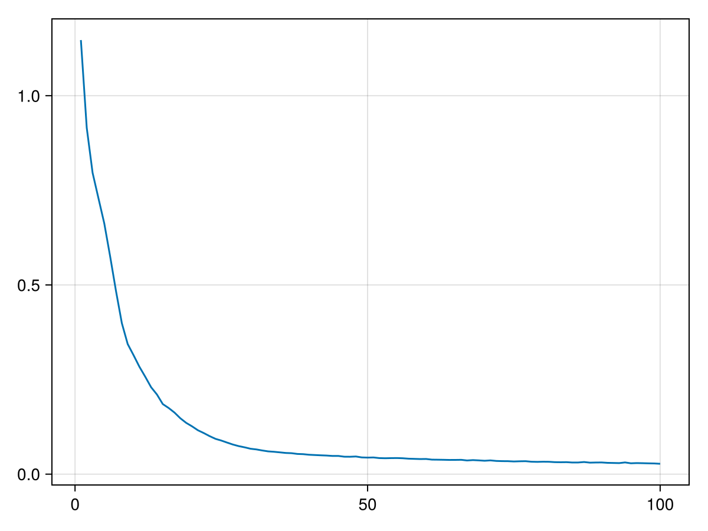
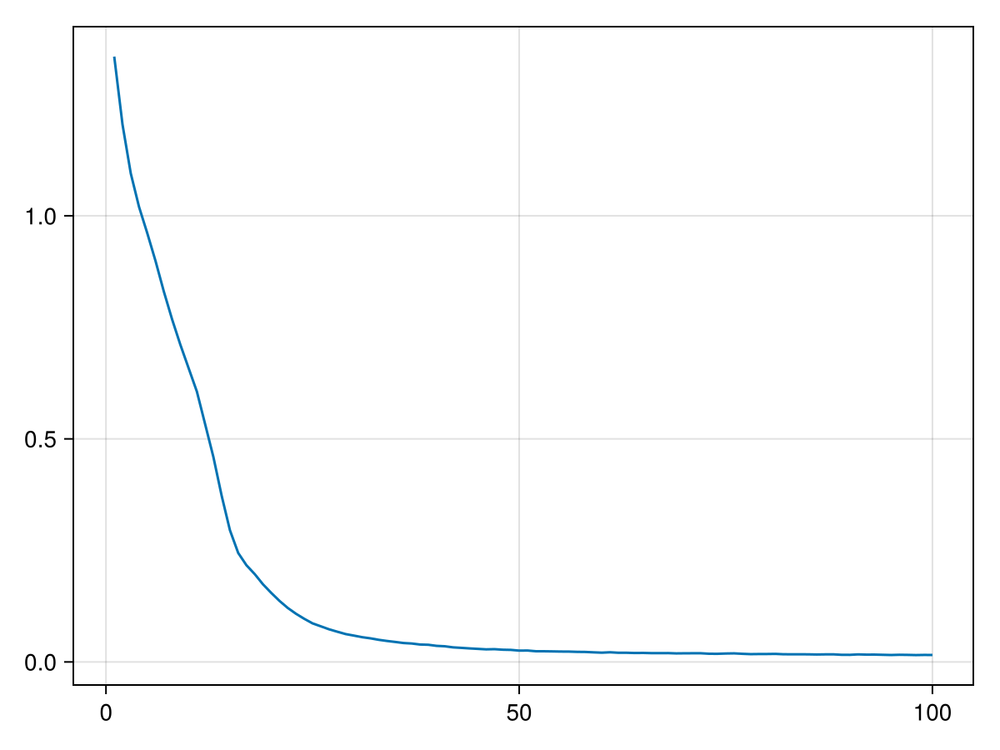

Hamiltonian Neural Network
In this tutorial we build a Hamiltonian neural network.
Training a HNN Based on VectorField Data
We first train a HNN based on vector field data:
𝕁 = PoissonTensor(2)
vf(z) = 𝕁 * z
domain = [[q, p] for q in -1:.1:1 for p in -1:.1:1]
vf_data = vf.(domain)
domain_matrix = hcat(domain...)
vf_matrix = hcat(vf_data...)
dl = DataLoader(domain_matrix, vf_matrix)[ Info: You have provided an input and an output.We then build the neural network:
const intermediate_dim = 5
hnn_arch = StandardHamiltonianArchitecture(2, intermediate_dim)
hnn = NeuralNetwork(hnn_arch)Next we define the loss function
loss = HNNLoss(hnn_arch)We can now train the network
batch = Batch(10)
n_epochs = 100
o = Optimizer(Adam(Float64), hnn)
loss_array = o(hnn, dl, batch, n_epochs, loss)
Usually we use Zygote for computing derivatives in GeometricMachineLearning, but as the Zygote documentation itself points out: "Often using a different AD system over Zygote is a better solution [for computing second-order derivatives]." For this reason we compute the loss of the HNN with SymbolicNeuralNetworks and optionally also its gradient.
Training a HNN Based on Phase Space Data
We now train a HNN on the same system based on phase space data. The data are not vector fields, but pairs of points a fixed timestep apart. We produce such pairs by applying the exact flow of vf, which is $\exp(\Delta{}t\mathbb{J})$, to the points of the domain:
const Δt = .1
next_matrix = exp(Δt * Matrix(𝕁)) * domain_matrix
dl_pairs = DataLoader(domain_matrix, next_matrix)[ Info: You have provided an input and an output.We start from a new network of the architecture we built above:
hnn_pairs = NeuralNetwork(hnn_arch)The loss needs the timestep, because the finite difference it compares the vector field against does:
loss_pairs = SymplecticEulerLoss(hnn_arch, Δt)GeometricMachineLearning.SymplecticEulerLoss defaults to the :A variant, which evaluates the vector field at $(q^{(t+1)}, p^{(t)})$. Passing variant = :B evaluates it at $(q^{(t)}, p^{(t+1)})$ instead, which is the variant the loss formula is written for. That formula states the evaluation points of the :B variant; the warning beside it records that its sign differs from the implementation.
The data comes from the exact flow, but the loss holds the network to one step of the symplectic Euler method. The two agree only to first order in $\Delta{}t$. The target of this training is therefore not the Hamiltonian of vf, which is $H(q, p) = (q^2 + p^2) / 2$, but the Hamiltonian whose symplectic Euler step reproduces the exact flow; the two differ at order $\Delta{}t$. So $H$ itself does not make this loss vanish, and scripts/verification/symplectic_euler_loss_modified_hamiltonian.jl shows the residual it leaves halves when $\Delta{}t$ does. The first section compares the network against the vector field directly and has no such offset.
We can now train the network:
o_pairs = Optimizer(Adam(Float64), hnn_pairs)
loss_array_pairs = o_pairs(hnn_pairs, dl_pairs, batch, n_epochs, loss_pairs)